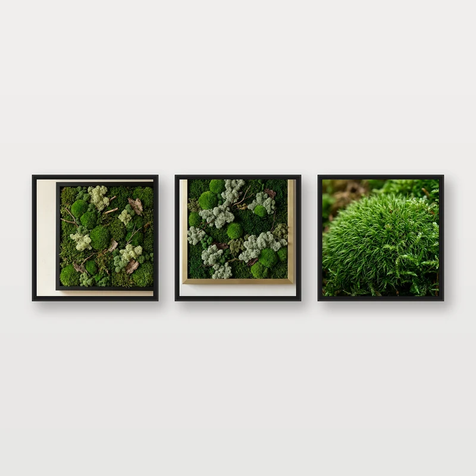

Вертикальное озеленение
Мы проектируем и устанавливаем системы вертикального озеленения для интерьера и экстерьера, превращающие стены в живые зелёные поверхности.
Подробнее
Горный мох премиум-класса с живой фактурой из нетронутых гор, архитектурные панели из мха и акустические ботанические арт-объекты. Без полива и ухода, оригинальное качество напрямую от производителя.

От стен из мха до вертикальных садов, от озеленения интерьеров до бонсай и декоративных деревьев — одна команда ведёт ваш проект от замера до монтажа.
Мы проектируем и устанавливаем системы вертикального озеленения для интерьера и экстерьера, превращающие стены в живые зелёные поверхности.
ПодробнееСтены из стабилизированного мха по индивидуальному дизайну — без ухода, с акустическим комфортом и престижем для любого пространства.
ПодробнееОт офисов до отелей — мы создаём более спокойные пространства, озеленяя рабочие и жилые зоны в духе биофильного дизайна.
ПодробнееМы придаём интерьерам характер с помощью декоративных бонсай ручной работы, не требующих ухода.
ПодробнееМы создаём впечатляющие пространства с реалистичными декоративными деревьями ручной работы, изготовленными по размерам архитектурных проектов.
ПодробнееМы поставляем стабилизированный мох и картины из мха оптом архитекторам, ландшафтным компаниям, флористам и магазинам.
ПодробнееКартины из стабилизированного мха без ухода, ботанические наборы и декоративные бонсай.



Каждое изделие для нас — не просто декор, а умиротворённая атмосфера леса и вневременной арт-объект в вашем пространстве.
Настоящий мох, бережно собранный в высокогорных лесах, годами сохраняет форму и эластичность благодаря экологичной глицериновой обработке.
Не нужны полив, пересадка, обрезка и дневной свет. При обычной влажности в помещении мох 7–10 лет сохраняет бархатистую фактуру.
Все элементы рам и креплений тщательно собираются из шлифованной античной латуни и массива ореха в нашей бутиковой мастерской.
В современном бизнесе биофильный дизайн повышает концентрацию сотрудников и оставляет у гостей незабываемое первое впечатление. Eliva Moss реализует проекты под ключ для лобби отелей, штаб-квартир компаний, клиник и ресторанов премиум-класса.
Eliva Moss вдохновляется древним спокойствием нетронутых высокогорных лесов. Лесной мох, бережно и контролируемо собранный без вреда для природы, мы с помощью передовой технологии стабилизации переносим за пределы времени.
В основе нашей философии дизайна — органическое совершенство. Соединяя красоту живых растений с лёгкостью нулевого ухода и дисциплиной высокого мастерства, мы дарим вашим пространствам зелёные уголки, в которых легко дышится.
Читайте наши подробные экспертные статьи — от ухода до архитектурных решений, от акустических преимуществ до бюджета.
Как проходит биологическая консервация? Почему мху не нужна вода и как он сохраняет форму 10 лет? Наш подробный гид.
Читать далее →Идеальная влажность, температура и советы по размещению, которые продлят жизнь стен из мха.
Читать далее →Доказанный вклад биофильного дизайна в продуктивность сотрудников, акустическую тишину и престиж бренда.
Читать далее →Ответы на самые частые вопросы клиентов о наших изделиях из стабилизированного мха.